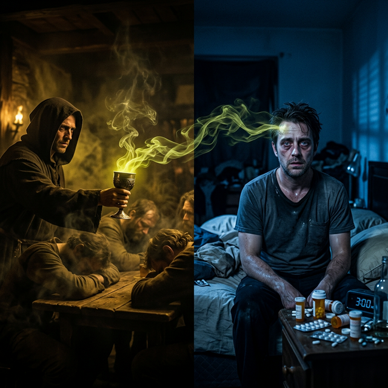
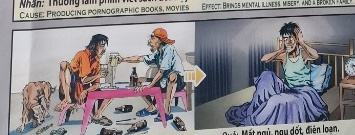

El Veneno Dulce The Sweet Poison Il dolce veleno 甜蜜的毒药 السم الحلو Сладкий яд Das süße Gift Le doux poison 甘い毒 O doce veneno
La inducción al vicio y la pérdida de la lucidez. Inducing vice and the loss of lucidity. L'induzione al vizio e la perdita della lucidità. 陷入恶习并丧失清醒。 الدخول في الرذيلة وفقدان الوضوح. Введение в порок и потеря ясности. Die Verführung ins Laster und der Verlust der Klarheit. L’induction au vice et la perte de lucidité. 悪徳への誘導と明晰さの喪失。 A indução ao vício e a perda de lucidez.
Kiem animaba a los viajeros a perderse en el exceso, vendiendo brebajes que nublaban el juicio. Al inducir a otros a la adicción, sembró una Causa de embotamiento intelectual. Hoy ese espíritu sufre de insomnio crónico y una mente que se siente en blanco.
Kiem encouraged travelers to lose themselves in excess, selling brews that clouded judgment. By inducing others to addiction, he sowed a Cause of intellectual dullness. Today that spirit suffers from chronic insomnia and a mind that feels blank.
"El hombre que no puede dormir simboliza la vigilia forzada de una conciencia que destruyó la lucidez ajena."
"The man who cannot sleep symbolizes the forced vigil of a consciousness that destroyed others' lucidity."
El Vaso Vacío
The Empty Glass
Il bicchiere vuoto
空玻璃杯
الزجاج الفارغ
Пустой стакан
Das leere Glas
Le verre vide
空のグラス
O copo vazio
Un tabernero ambicioso mezclaba los licores para aturdir la mente de los viajeros. Se llenaba los bolsillos de monedas, mientras veía cómo sus clientes perdían su dignidad, su claridad y, muchas veces, su camino a casa...
Pero en la aritmética divina, robar el entendimiento a otro tiene un peso doloroso. Así que un día, el tabernero comenzó a sentir una niebla constante en su propia cabeza. No lograba pensar con claridad. El sueño huía de sus ojos y la lucidez se le escapaba como agua entre los dedos.
Estaba cargando con toda la confusión que él mismo vendió en sus copas. Y mientras tropezaba en su propia ceguera intelectual, nació en él una sed inmensa por la verdad. Entendió que la claridad de la mente es un regalo sagrado de Dios, y prometió no volver a nublar jamás la luz de un hermano.
An ambitious innkeeper mixed the liquors to boggle the minds of travelers. He filled his pockets with coins, while he watched his clients lose their dignity, their clarity and, many times, their way home...
But in divine arithmetic, stealing another's understanding has a painful weight. So one day, the innkeeper began to feel a constant fog in his own head. I couldn't think clearly. Sleep fled from his eyes and lucidity escaped him like water through his fingers.
He was carrying all the confusion that he himself sold in his cups. And as he stumbled in his own intellectual blindness, an immense thirst for truth was born in him. He understood that clarity of mind is a sacred gift from God, and he promised never to cloud the light of a brother again.
Un ambizioso locandiere mescolava i liquori per sbalordire le menti dei viaggiatori. Si riempiva le tasche di monete, mentre guardava i suoi clienti perdere la dignità, la lucidità e, molte volte, la strada di casa...
Ma nell'aritmetica divina, rubare la comprensione altrui ha un peso doloroso. Così un giorno il locandiere cominciò a sentire una nebbia costante nella sua testa. Non riuscivo a pensare chiaramente. Il sonno fuggì dai suoi occhi e la lucidità gli sfuggì come l'acqua tra le dita.
Portava nelle sue tazze tutta la confusione che lui stesso aveva venduto. E mentre inciampava nella sua cecità intellettuale, nasceva in lui un’immensa sete di verità. Capì che la lucidità mentale è un dono sacro di Dio e promise di non offuscare mai più la luce di un fratello.
一位雄心勃勃的旅店老板将酒混合起来，让旅客们迷惑不解。他在口袋里塞满了硬币，同时看着他的客户失去了尊严、失去了清晰度，很多时候甚至失去了回家的路……
但在神圣算术中，窃取他人的理解力是一件痛苦的事。于是有一天，旅店老板开始感到自己的脑袋里一直笼罩着一层迷雾。我无法清晰地思考。睡意从他的眼睛里消失了，清醒也像水一样从他的手指间消失了。
他带着他自己在杯子里出售的所有困惑。当他陷入自己智力上的盲目时，他内心诞生了对真理的巨大渴望。他明白头脑清晰是上帝赐予的神圣礼物，他承诺不再遮蔽兄弟的光芒。
قام صاحب فندق طموح بخلط المشروبات الكحولية لتحير عقول المسافرين. لقد ملأ جيوبه بالعملات المعدنية، بينما كان يشاهد عملائه يفقدون كرامتهم، ووضوحهم، وفي كثير من الأحيان، طريقهم إلى المنزل...
لكن في الحساب الإلهي، سرقة فهم الآخرين لها وزن مؤلم. لذلك، في أحد الأيام، بدأ صاحب الفندق يشعر بضباب مستمر في رأسه. لم أستطع التفكير بوضوح. هرب النوم من عينيه، وخرج منه الوضوح كما يتسرب الماء من أصابعه.
كان يحمل كل الارتباك الذي باعه بنفسه في كؤوسه. وبينما تعثر في عماه الفكري، ولد فيه تعطش هائل للحقيقة. لقد فهم أن صفاء الذهن هو هبة مقدسة من الله، ووعد بأنه لن يحجب نور أخيه مرة أخرى.
Амбициозный трактирщик смешал спиртные напитки, чтобы поразить умы путешественников. Он набивал карманы монетами, наблюдая, как его клиенты теряют свое достоинство, ясность и много раз дорогу домой...
Но в божественной арифметике кража чужого понимания имеет болезненный вес. Итак, однажды трактирщик начал чувствовать постоянный туман в собственной голове. Я не мог ясно мыслить. Сон ускользнул из его глаз, и ясность ускользнула из него, как вода сквозь пальцы.
Он нес в своих чашках всю путаницу, которую сам продавал. И когда он споткнулся в собственной интеллектуальной слепоте, в нем родилась безмерная жажда истины. Он понял, что ясность ума – священный дар Божий, и пообещал никогда больше не омрачать свет брата.
Ein ehrgeiziger Gastwirt mischte die Spirituosen, um die Reisenden in Erstaunen zu versetzen. Er füllte seine Taschen mit Münzen, während er zusah, wie seine Klienten ihre Würde, ihre Klarheit und oft auch den Weg nach Hause verloren …
Aber in der göttlichen Arithmetik hat es eine schmerzhafte Last, einem anderen das Verständnis zu stehlen. Eines Tages begann der Wirt, einen ständigen Nebel in seinem Kopf zu spüren. Ich konnte nicht klar denken. Der Schlaf floh aus seinen Augen und die Klarheit entströmte ihm wie Wasser durch seine Finger.
Er trug die ganze Verwirrung, die er selbst verkaufte, in seinen Tassen. Und als er in seiner eigenen intellektuellen Blindheit stolperte, wurde in ihm ein immenser Durst nach Wahrheit geboren. Er verstand, dass die Klarheit des Geistes ein heiliges Geschenk Gottes ist, und er versprach, nie wieder das Licht eines Bruders zu trüben.
Un aubergiste ambitieux mélangeait les liqueurs pour époustoufler les voyageurs. Il remplissait ses poches de pièces de monnaie, tandis qu'il voyait ses clients perdre leur dignité, leur clarté et, bien souvent, le chemin du retour...
Mais dans l’arithmétique divine, voler la compréhension d’autrui a un poids douloureux. Alors un jour, l’aubergiste commença à ressentir un brouillard constant dans sa tête. Je ne pouvais pas penser clairement. Le sommeil s'enfuyait de ses yeux et la lucidité lui échappait comme l'eau entre ses doigts.
Il transportait dans ses tasses toute la confusion qu'il vendait lui-même. Et alors qu’il trébuchait dans sa propre cécité intellectuelle, une immense soif de vérité est née en lui. Il a compris que la clarté d’esprit est un don sacré de Dieu et il a promis de ne plus jamais obscurcir la lumière d’un frère.
野心的な宿屋の主人が、旅行者の心を驚かせる酒を調合しました。彼は、クライアントが尊厳を失い、明晰さを失い、そして何度も家に帰るのを見ながら、ポケットをコインで満たしました...
しかし、神の算術では、他人の理解を盗むことは痛ましい重みを持ちます。そこである日、宿屋の主人は自分の頭の中に常に霧がかかっているように感じ始めました。明確に考えることができませんでした。彼の目からは眠りが消え、指を伝う水のように明晰さが彼から逃げていった。
彼は自分自身が自分のカップで販売したすべての混乱を抱えていました。そして、彼自身の知的盲目さの中でつまずいたとき、彼の中に真実への計り知れない渇望が生まれました。彼は、頭の明晰さは神からの神聖な贈り物であることを理解し、兄弟の光を二度と曇らさないと約束しました。
Um estalajadeiro ambicioso misturou as bebidas para confundir a mente dos viajantes. Encheu os bolsos de moedas, enquanto via os seus clientes perderem a dignidade, a clareza e, muitas vezes, o caminho de casa...
Mas na aritmética divina, roubar a compreensão de outra pessoa tem um peso doloroso. Então, um dia, o estalajadeiro começou a sentir uma névoa constante em sua cabeça. Eu não conseguia pensar com clareza. O sono fugiu de seus olhos e a lucidez escapou-lhe como água por entre os dedos.
Ele carregava em seus copos toda a confusão que ele mesmo vendia. E ao tropeçar em sua própria cegueira intelectual, nasceu nele uma imensa sede pela verdade. Ele entendeu que a clareza mental é um dom sagrado de Deus e prometeu nunca mais ofuscar a luz de um irmão.

La Inspiración Original
The Original Inspiration
L'Ispirazione Originale
最初的灵感
الإلهام الأصلي
Оригинальное вдохновение
Die Ursprüngliche Inspiration
L'Inspiration Originale
元のインスピレーション
A Inspiração Original
La historia que hemos relatado en este capítulo está inspirada por el pasaje de la escena original de los murales «Tranh Nhân Quả» (Ilustraciones del Karma) del Templo Linh Ung en Da Nang, capturado en la imagen.
La storia che abbiamo raccontato in questo capitolo è ispirata al passaggio della scena originale dei murali “Tranh Nhân Quả” (Illustrazioni del Karma) del Tempio Linh Ung a Da Nang, catturati nell'immagine.
我们在本章中讲述的故事的灵感来自图像中捕获的岘港灵应寺“Tranh Nhân Quả”（业力插图）壁画的原始场景。
القصة التي رويناها في هذا الفصل مستوحاة من مقطع من المشهد الأصلي لجداريات "ترانه نهان كو" (الرسوم التوضيحية للكارما) لمعبد لينه أونغ في دا نانغ، الملتقطة في الصورة.
История, которую мы рассказали в этой главе, вдохновлена отрывком из оригинальной сцены фрески «Тран Нхан Ку» («Иллюстрации кармы») храма Линь Унг в Дананге, запечатленной на изображении.
Die Geschichte, die wir in diesem Kapitel erzählt haben, ist inspiriert von der Passage aus der Originalszene der Wandgemälde „Tranh Nhân Quả“ (Illustrationen von Karma) des Linh Ung-Tempels in Da Nang, die im Bild festgehalten ist.
L'histoire que nous avons racontée dans ce chapitre est inspirée du passage de la scène originale des peintures murales « Tranh Nhân Quả » (Illustrations du Karma) du temple Linh Ung à Da Nang, capturées dans l'image.
この章で私たちが語った物語は、ダナンのリンウン寺院の壁画「Tranh Nhân Quả」（カルマの図）の元のシーンの一節からインスピレーションを得て、画像に収められています。
A história que contamos neste capítulo é inspirada na passagem da cena original dos murais “Tranh Nhân Quả” (Ilustrações do Karma) do Templo Linh Ung em Da Nang, capturada na imagem.
The story we have related in this chapter is inspired by the passage from the original scene of the "Tranh Nhân Quả" (Karma Illustrations) murals at the Linh Ung Temple in Da Nang, captured in the image.

Como se puede apreciar en el pasaje extraído del mural, la causa y su efecto kármico están descritos originalmente en vietnamita y con una breve traducción al inglés. A continuación, te ofrecemos la traducción y el análisis en tu idioma:
As can be seen in the passage extracted from the mural, the cause and its karmic effect are originally described in Vietnamese with a brief English translation. Below, we offer the translation and analysis in your language:
Come si può vedere nel brano tratto dal murale, la causa e il suo effetto karmico sono originariamente descritti in vietnamita e con una breve traduzione in inglese. Di seguito offriamo la traduzione e l'analisi nella tua lingua:
从壁画的段落中可以看出，因果及其业果最初是用越南语描述的，并有简短的英文翻译。下面我们提供您的语言的翻译和分析：
وكما يتبين من المقطع المأخوذ من اللوحة الجدارية، فإن السبب وتأثيره الكارمي موصوفان في الأصل باللغة الفيتنامية مع ترجمة مختصرة إلى الإنجليزية. نقدم أدناه الترجمة والتحليل بلغتك:
Как видно из отрывка, взятого из фрески, причина и ее кармическое следствие изначально описаны на вьетнамском языке и с кратким переводом на английский язык. Ниже мы предлагаем перевод и анализ на ваш язык:
Wie aus der Passage aus dem Wandgemälde hervorgeht, werden die Ursache und ihre karmische Wirkung ursprünglich auf Vietnamesisch und mit einer kurzen Übersetzung ins Englische beschrieben. Nachfolgend bieten wir die Übersetzung und Analyse in Ihrer Sprache an:
Comme on peut le voir dans le passage tiré de la peinture murale, la cause et son effet karmique sont initialement décrits en vietnamien et avec une brève traduction en anglais. Ci-dessous, nous proposons la traduction et l’analyse dans votre langue :
壁画の一節からわかるように、原因とそのカルマ的影響はもともとベトナム語で説明されており、英語への簡単な翻訳が付けられています。以下にあなたの言語での翻訳と分析を提供します。
Como pode ser visto no trecho retirado do mural, a causa e seu efeito cármico são originalmente descritos em vietnamita e com uma breve tradução para o inglês. Abaixo oferecemos a tradução e análise em seu idioma:
🇻🇳 Tiếng Việt:
Nhân: Mời người sử dụng các chất gây say nghiện.
Quả: Mất ngủ, ngu dốt, điên loạn.
🇬🇧 English Translation:
Cause: Offering addictive substances to others.
Effect: Brings sleeplessness, foolishness, and mental disorders.
Traducción Recreada:
Causa: Ofrecer, vender o invitar al uso de sustancias adictivas o venenosas a otros.
Efecto: Atrae insomnio permanente, merma de la inteligencia, necedad y locura desorientadora.
Recreated Translation:
Cause: Offering, selling or inviting the use of addictive or poisonous substances to others.
Effect: Brings permanent insomnia, decreased intelligence, foolishness and disorienting madness.
Traduzione ricreata:
Causa: offrire, vendere o invitare ad altri l'uso di sostanze velenose o che creano dipendenza.
Effetto: porta insonnia permanente, diminuzione dell'intelligenza, stoltezza e follia disorientante.
重新翻译：
原因：向他人提供、出售或邀请使用成瘾或有毒物质。
效果：带来永久性失眠、智力下降、愚蠢和迷失方向的疯狂。
الترجمة المعاد إنشاؤها:
السبب: عرض أو بيع أو الدعوة إلى استخدام المواد المسببة للإدمان أو السامة للآخرين.
التأثير: يجلب الأرق الدائم وانخفاض الذكاء والحماقة والجنون المربك.
Воссозданный перевод:
Причина: Предложение, продажа или приглашение к употреблению вызывающих привыкание или ядовитых веществ другим.
Эффект: Приносит постоянную бессонницу, снижение интеллекта, глупость и дезориентирующее безумие.
Nachgebildete Übersetzung:
Ursache: Anbieten, Verkaufen oder Auffordern des Konsums von Sucht- oder Giftstoffen an andere.
Wirkung: Verursacht dauerhafte Schlaflosigkeit, verminderte Intelligenz, Dummheit und desorientierenden Wahnsinns.
Traduction recréée :
Cause : Offrir, vendre ou inviter l'utilisation de substances addictives ou toxiques à d'autres.
Effet : Provoque une insomnie permanente, une diminution de l'intelligence, une folie et une folie désorientante.
再作成された翻訳:
原因: 依存性または有毒物質の使用を他人に提供、販売、または勧誘すること。
結果: 永続的な不眠症、知性の低下、愚かさ、方向感覚を失う狂気をもたらします。
Tradução recriada:
Causa: Oferecer, vender ou convidar o uso de substâncias viciantes ou venenosas a outras pessoas.
Efeito: Traz insônia permanente, diminuição da inteligência, tolice e loucura desorientadora.
Análisis: Diluir el juicio sagrado, la voluntad de un tercero, sedándolo para la ruina en pos de mero y codicioso enriquecimiento es adueñarnos de su capacidad cerebral y amnesia perjudicial temporal. Como las leyes energéticas impiden deudas sin saldar, asimilamos en paralelo ese oscuro desvarío como un tormento neurótico; padeciendo de insomnios crónicos irrefrenables y nublando nuestra brillantez e inspiración hasta la impotencia para empujarnos ávidamente a revalorizar por contraste la sobriedad divina de una mente limpia e intacta.
Analysis: Diluting the sacred judgment, the will of a third party, sedating them for ruin in pursuit of mere and greedy enrichment is taking over their brain capacity and temporary harmful amnesia. As energy laws prevent unpaid debts, we simultaneously assimilate this dark madness as a neurotic torment; suffering from uncontrollable chronic insomnia and clouding our brilliance and inspiration to the point of impotence to eagerly push us to revalue by contrast the divine sobriety of a clean and intact mind.
Analisi: Diluire il giudizio sacro, la volontà di un terzo, sedarlo per la rovina alla ricerca di un mero e avido arricchimento sta prendendo il sopravvento sulla sua capacità cerebrale e provocando un'amnesia dannosa temporanea. Poiché le leggi energetiche prevengono i debiti non pagati, allo stesso tempo assimiliamo questa oscura follia come un tormento nevrotico; soffriamo di insonnia cronica incontrollabile e offusiamo la nostra brillantezza e ispirazione fino all'impotenza per spingerci avidamente a rivalutare per contrasto la divina sobrietà di una mente pulita e intatta.
分析：淡化神圣的审判、第三方的意志，让他们沉迷于毁灭，只为了追求纯粹而贪婪的致富，正在接管他们的大脑能力和暂时有害的失忆症。当能源法阻止未偿债务时，我们同时将这种黑暗的疯狂视为一种神经质的折磨；患有无法控制的慢性失眠症，遮蔽了我们的才华和灵感，以至于无力迫切地促使我们通过对比来重新评价干净而完整的心灵的神圣清醒。
التحليل: إن إضعاف الحكم المقدس، وإرادة الطرف الثالث، وتخديرهم للدمار سعياً وراء مجرد الإثراء الجشع، يستولي على قدراتهم الدماغية ويؤدي إلى فقدان الذاكرة الضار المؤقت. وبما أن قوانين الطاقة تمنع الديون غير المسددة، فإننا في الوقت نفسه نعتبر هذا الجنون المظلم بمثابة عذاب عصبي؛ المعاناة من الأرق المزمن الذي لا يمكن السيطرة عليه وتشويش تألقنا وإلهامنا إلى درجة العجز لدفعنا بفارغ الصبر إلى إعادة تقييم الرصانة الإلهية للعقل النظيف والسليم.
Анализ: Размывание священного суждения, воли третьей стороны, успокоение их для разрушения в погоне за простым и жадным обогащением приводит к захвату их мозговых способностей и временной вредной амнезии. Поскольку энергетические законы предотвращают неоплаченные долги, мы одновременно воспринимаем это темное безумие как невротическое мучение; страдающие от неконтролируемой хронической бессонницы и затуманивающие наш блеск и вдохновение до бессилия, чтобы нетерпеливо подтолкнуть нас к переоценке контраста божественной трезвости чистого и неповрежденного разума.
Analyse: Die Verwässerung des heiligen Urteils, des Willens Dritter, die Beruhigung zum Untergang im Streben nach bloßer und gieriger Bereicherung führt zu einer Beeinträchtigung der Gehirnkapazität und einer vorübergehenden schädlichen Amnesie. Da Energiegesetze unbezahlte Schulden verhindern, assimilieren wir diesen dunklen Wahnsinn gleichzeitig als neurotische Qual; Wir leiden unter unkontrollierbarer chronischer Schlaflosigkeit und trüben unsere Brillanz und Inspiration bis zur Ohnmacht, um uns eifrig dazu zu drängen, im Gegensatz dazu die göttliche Nüchternheit eines reinen und intakten Geistes neu zu bewerten.
Analyse : Diluer le jugement sacré, la volonté d'un tiers, les endormir jusqu'à leur ruine dans la poursuite d'un enrichissement simple et avide, c'est s'emparer de leurs capacités cérébrales et d'une amnésie temporaire nocive. Alors que les lois énergétiques empêchent les dettes impayées, nous assimilons simultanément cette sombre folie à un tourment névrotique ; souffrant d'insomnie chronique incontrôlable et obscurcissant notre éclat et notre inspiration jusqu'à l'impuissance à nous pousser avec empressement à revaloriser par contraste la sobriété divine d'un esprit propre et intact.
分析: 神聖な判断や第三者の意志を薄め、単なる貪欲な富を追求して破滅に向けて鎮静させることが、彼らの脳の能力を引き継ぎ、一時的な有害な健忘症になっています。エネルギー法が未払いの借金を防ぐと同時に、私たちはこの暗い狂気を神経症の苦痛として同化します。制御不能な慢性不眠症に苦しみ、私たちの輝きとインスピレーションを無力の地点まで曇らせ、それとは対照的に、清らかで無傷の心の神聖な節度を再評価するよう私たちに熱心に促します。
Análise: Diluir o julgamento sagrado, a vontade de terceiros, sedá-los para a ruína em busca do mero e ganancioso enriquecimento é assumir o controle de sua capacidade cerebral e de amnésia prejudicial temporária. À medida que as leis energéticas evitam dívidas não pagas, assimilamos simultaneamente esta loucura sombria como um tormento neurótico; sofrendo de insônia crônica incontrolável e obscurecendo nosso brilho e inspiração ao ponto da impotência para nos levar a reavaliar, por contraste, a sobriedade divina de uma mente limpa e intacta.
Si quieres conocer más sobre el proyecto o colaborar, accede a nuestro Linktree.
If you want to know more about the project or collaborate, access our Linktree.
Se vuoi saperne di più sul progetto o collaborare, accedi al nostro Linktree.
如果您想了解有关该项目或合作的更多信息，请访问我们的 Linktree.
إذا كنت تريد معرفة المزيد عن المشروع أو التعاون، قم بالوصول إلى موقعنا Linktree.
Если вы хотите узнать больше о проекте или сотрудничать, посетите наш Linktree.
Wenn Sie mehr über das Projekt erfahren oder zusammenarbeiten möchten, greifen Sie auf unsere zu Linktree.
Si vous souhaitez en savoir plus sur le projet ou collaborer, accédez à notre Linktree.
プロジェクトについて詳しく知りたい場合、またはコラボレーションしたい場合は、こちらにアクセスしてください。 Linktree.
Se quiser saber mais sobre o projeto ou colaborar, acesse nosso Linktree.